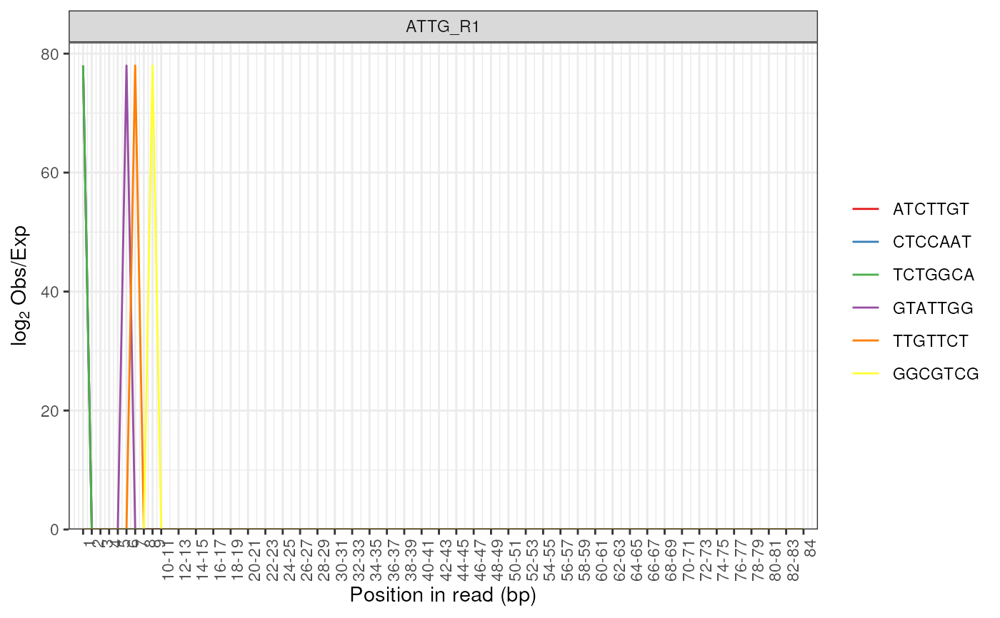
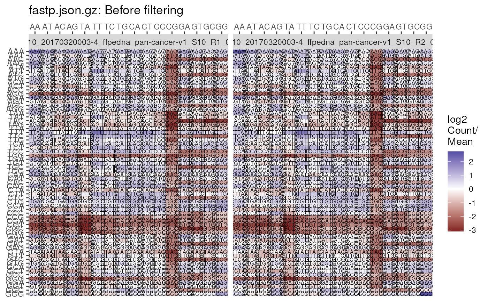
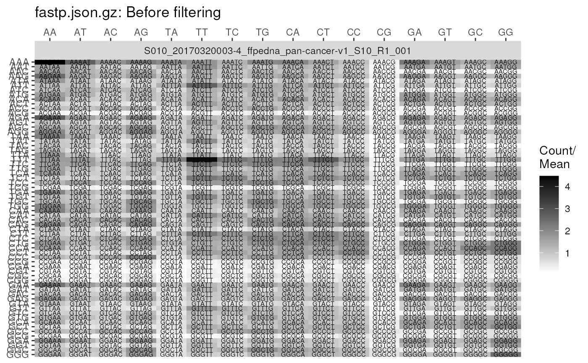

Plot Overrepresented Kmers
plotKmers(x, usePlotly = FALSE, labels, pattern = ".(fast|fq|bam).*", ...)
# S4 method for ANY
plotKmers(x, usePlotly = FALSE, labels, pattern = ".(fast|fq|bam).*", ...)
# S4 method for FastqcData
plotKmers(
x,
usePlotly = FALSE,
labels,
pattern = ".(fast|fq|bam).*",
n = 6,
linewidth = 0.5,
plotlyLegend = FALSE,
scaleColour = NULL,
pal = c("red", "blue", "green", "black", "magenta", "yellow"),
...
)
# S4 method for FastqcDataList
plotKmers(
x,
usePlotly = FALSE,
labels,
pattern = ".(fast|fq|bam).*",
cluster = FALSE,
dendrogram = FALSE,
pwfCols,
showPwf = TRUE,
scaleFill = NULL,
heatCol = hcl.colors(50, "inferno"),
heat_w = 8,
...
)
# S4 method for FastpData
plotKmers(
x,
usePlotly = FALSE,
labels,
pattern = ".(fast|fq|bam).*",
module = c("Before_filtering", "After_filtering"),
reads = c("read1", "read2"),
readsBy = c("facet", "mean", "diff"),
trans = "log2",
scaleFill = NULL,
plotTheme = theme(),
plotlyLegend = FALSE,
...
)Can be a FastqcData, FastqcDataList or file paths
logical Default FALSE will render using
ggplot. If TRUE plot will be rendered with plotly
An optional named vector of labels for the file names. All filenames must be present in the names.
regex to drop from the end of filenames
Used to pass parameters to theme for FastqcData objects and to geoms for FastpData objects
numeric. The number of Kmers to show.
Passed to geom_line()
Show legend for interactive plots
The colour palette. If the vector supplied is less than n,
grDevices::colorRampPalette() will be used
logical default FALSE. If set to TRUE,
fastqc data will be clustered using hierarchical clustering
logical redundant if cluster is FALSE
if both cluster and dendrogram are specified as TRUE
then the dendrogram will be displayed.
Object of class PwfCols() to give colours for
pass, warning, and fail values in the plot
Show the PASS/WARN/FAIL status
ggplot2 scales to be used for colour palettes
Colour palette used for the heatmap. Default is inferno
from the viridis set of palettes
Relative width of any heatmap plot components
The module to obtain data from when using a FastpData object
Either read1 or read2. Only used when using a FastpData object
Strategy for visualising both read1 and read2. Can be set to show each set of reads by facet, or within the same plot taking the mean of the enrichment above mean, or the difference in the enrichment above mean
Function for transforming the count/mean ratio. Set as NULL to use the ratio without transformation
theme object
A standard ggplot2 object or an interactive plotly object
As the Kmer Content module present in FastQC reports is relatively uninformative, and omitted by default in later versions of FastQC, these are rudimentary plots.
Plots for FastqcData objects replicate those contained in a FastQC
report, whilst the heatmap generated from FastqcDataList objects
simply show the location and abundance of over-represented Kmers.
# Get the files included with the package
packageDir <- system.file("extdata", package = "ngsReports")
fl <- list.files(packageDir, pattern = "fastqc.zip", full.names = TRUE)
# Load the FASTQC data as a FastqcDataList object
fdl <- FastqcDataList(fl)
plotKmers(fdl[[1]])

# Use a FastpData object
fl <- system.file("extdata", "fastp.json.gz", package = "ngsReports")
fp <- FastpData(fl)
plotKmers(fp, size = 2)

plotKmers(
fp, reads = "read1", size = 2, trans = NULL,
scaleFill = scale_fill_gradient(low = "white", high = "black")
)
